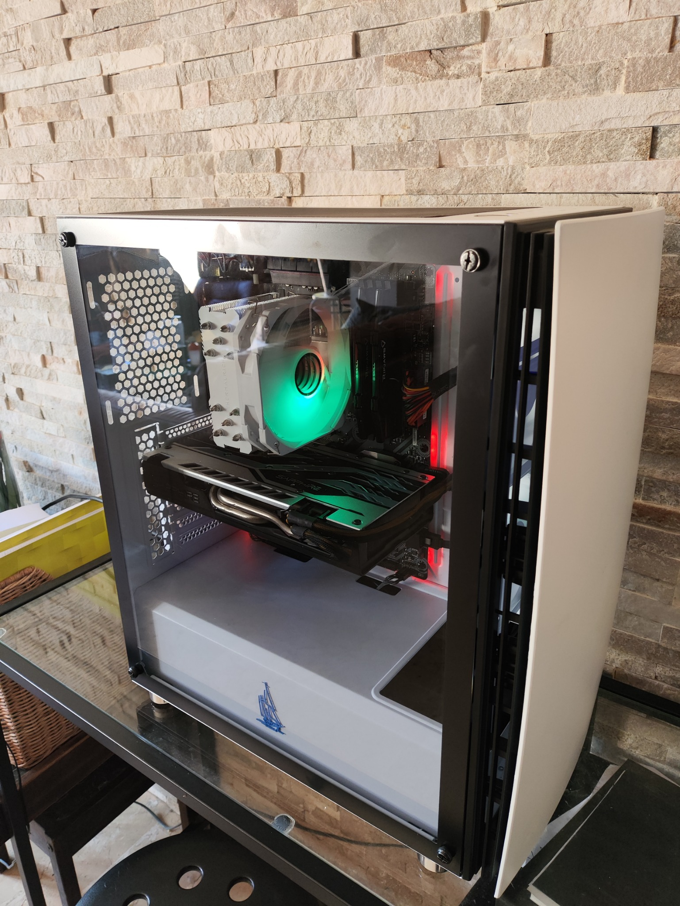
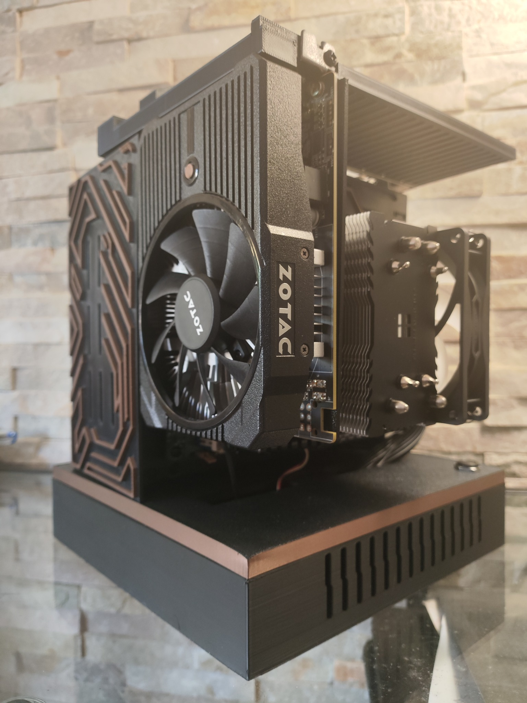

Ordenadores entregados
Aquí iré compartiendo algunos de los PCs que ya han encontrado un nuevo hogar. No son solo máquinas: cada uno ha sido montado con cariño, cuidado y pensando en que quien lo reciba sienta orgullo, no pena. Un PC puede ser poco para algunos… pero puede ser una puerta abierta al estudio, al juego o a los sueños para otros.

PC #001
Ryzen 5 + RX 550. Entregado en Palma a un chaval de 12 años para estudiar y jugar a Fortnite.

PC #002
Equipo ITX impreso en 3D. Lo entregué en Andratx. Pequeño pero matón. Para clases online y diseño gráfico.